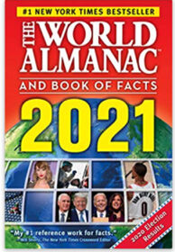
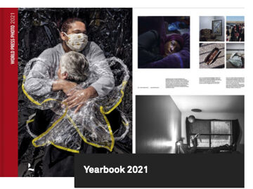
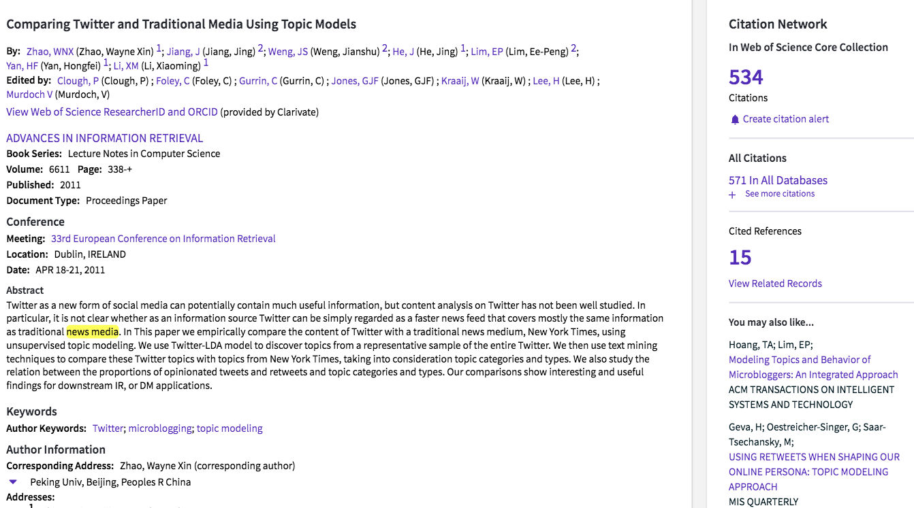
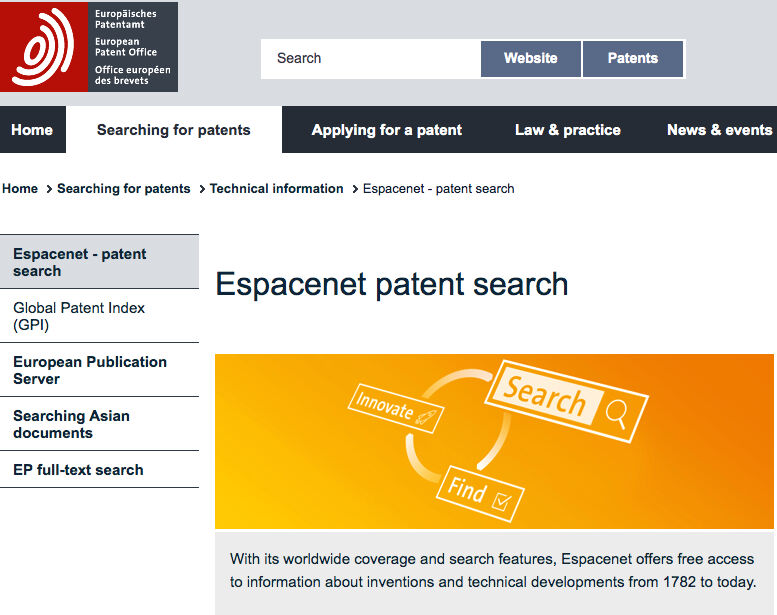

Öğrenen Sürümü
Eğitici Sürümü
Öğrenen Sürümü
Eğitici Sürümü
Modül 13: Güvenilir Bilgi Kaynakları
Modülün Tanımı
Bu modülün ana amacı, öğrenenlerin farklı bilgi kaynağı kategorilerini ve türlerini tanımalarına ve ayırt etmelerine yardımcı olmak için güvenilir bilgi kaynaklarını tanıtmaktır. İkincil amaç ise bu Modülün içeriğini öğrenenleri eğitmek için kullanmak isteyen eğitmenlere rehberlik etmektir.
Bu amaçlardan hareketle, bu modülde bilgi kaynaklarının ana kategorileri ve türlerinin tanımları, haber ve gazetecilik ile ilgili bilgi kaynaklarına örnekler ve konunun nasıl öğretileceğine ilişkin yönergeler ele alınmaktadır.
Bu Modülü başarıyla tamamlayanlar şunları yapabilir:
- Farklı bilgi kaynakları kategorilerini tanımlar ve ayırt eder (örneğin, birincil, ikincil ya da üçüncül kaynaklar).
- Farklı türdeki bilgi kaynaklarını tanımlar ve ayırt eder (örneğin, referans kaynakları, kitaplar, süreli yayınlar, veri tabanları).
- Haber ve gazetecilik ile ilgili bazı bilgi kaynakları örneklerine aşina olur.
Ayrıca, bu modülü başarıyla tamamlayan eğitmenler, konuyu nasıl öğreteceklerini anlarlar.
Modülün Yapısı
Bu Modül aşağıdaki bölümlerden oluşmaktadır:
- Amaç, İçeriğin Tanımı ve Öğrenme Çıktıları
- Modülün Yapısı
- Öğrenenler için Yönerge
- Eğitmenler için Yönerge (hazırlık, kullanılacak yöntemler ve eğitmenler için ipuçları)
- İçerik (çalışma materyalleri ve alıştırmalar)
- Test
- Kaynakça (yararlanılan kaynaklar ve önerilen kaynaklar ile videolar)
Modülün ana hedefleri, içerik ve öğrenme çıktıları Modülün Tanımı bölümünde açıklanmıştır. İçerik, tüm çalışma materyallerini ve ilgili alıştırmaları içerir. Test, öğrenenlerin kendilerini ve ilerlemelerini test edebilmeleri için hazırlanmıştır. Genellikle çoktan seçmeli veya doğru/yanlış sorularından oluşur.Kaynakça, yararlanılan kaynaklar ve önerilen kaynaklar şeklinde iki bileşenden oluşur. İçerik hazırlanırken yararlanılan ve atıf yapılan kaynaklar Kaynakça başlığı altında listelenmiştir. Ek Kaynakça, konuyla ilgili daha fazla bilgi edinmek isteyenler için okunması/izlenmesi önerilen kaynaklar ve videoların listesinden oluşur. Öğrenenler için Yönerge, öğrenenlere yönelik talimat ve önerileri içerir.Eğitmenler için Yönerge, eğitimin farklı aşamalarında eğitmenleri yönlendirir ve konunun öğretiminde kullanılacak faydalı ipuçları sağlar.
Öğrenenler için Yönerge
Öğrenenlerden içeriği dikkatle okumaları ve alıştırmaları yapmaları beklenmektedir. Daha fazla bilgi gereksinimi duydukları konularda kaynakçalarda listelenen kaynaklara başvurabilirler. İçerik üzerindeki çalışmalarını tamamladıktan sonra, ilerlemelerini değerlendirmek için modül sonundaki testi yapmaları önerilir.
Eğitmenler için Yönerge
Bu bölüm, ele alınan konunun nasıl öğretileceğine ve Modül içeriğinin bu amaçla nasıl kullanılabileceğine ilişkin eğiticilere yönelik öneri ve ipuçları içerir. Test sonuçlarına göre gerekirse çalışma materyali yeniden gözden geçirilebilir.
Hazırlık
Görsel materyallerle desteklenen bir sunum (PowerPoint/Prezi/Canva) hazırlanması önerilir. Ayrıca sunulan örneklerin (örneğin Data Turkey, LETA, LURSOFT "Laikrakstu bibliotēka") ve alıştırmaların hedef grubun daha aşina olduğu konulara uyarlanması önerilmektedir. Bu tür örneklerin kullanılması öğrenenlerin ilgisini çekme ve sürdürme konusunda yardımcı olur. Kurs sırasında, farklı kaynakların gerçek zamanlı kullanımı da tavsiye edilir.
Başlarken
Konuya ısındırmak amacıyla başlangıçta Kahoot veya Mentimeter gibi araçlar kullanılarak öğrenenlere konuyla ilgili genel ve kısa bazı sorular (3 ile 5 soru) yöneltilebilir. Böyle bir başlangıç öğrenenlerin konuyla ilgili mevcut bilgi düzeyleri hakkında bilgi sağlayacağı gibi bir motivasyon kaynağı olarak da kullanılabilir. Bu amaçla kullanılabilecek sorulara bazı örnekler şunlar olabilir:
- Birincil kaynak ne demektir?
- Bir referans kaynağı örneği verebilir misiniz?
- Veri tabanı nedir?
- Ana akım kaynaklardan derlenen dünyanın önemli haber içeriklerine tek bir kaynaktan erişmek mümkün müdür?
Kullanılacak Yöntemler
Eğitim sırasında çeşitli öğretim yöntemleri bir arada kullanılabilir:
- Ders anlatma
- Grup çalışması
- Bireysel çalışma
- Kendini yansıtma
Eğitmenler için İpuçları
Isınma
Öğrenenleri sürece dahil etmenin ve öğrenecekleri şeyler hakkında ortak beklentiler oluşturmanın etkili bir yolu konu hakkında (güvenilir bilgi kaynakları) birkaç ön hazırlık sorusu sormaktır. Örneğin şu sorular sorulabilir: İkincil kaynak nedir? Tarihi gazeteleri nerede bulabilirim? Web kaynakları ve veri tabanları arasındaki fark nedir? Ayrıca şu şekilde bir etkinlik yapılabilir:
- farklı türlerdeki kaynakların kullanımını gerektiren araştırma konuları hazırlayın (örneğin referans kaynakları, veri tabanları, kitaplar, süreli yayınlar, standartlar)
- öğrenenlerin bu konular için uygun ve güvenilir kaynakları seçmelerini isteyin
- öğrenenlerin seçimlerini diğer öğrenenlerle paylaşmalarını ve açıklamalarını isteyin
- öğrenenlerden araştırma sorularını cevaplamak için kendi seçtikleri kaynakları kullanmalarını isteyin
- öğrenenlere sonuçlardan memnun olup olmadıklarını sorun
- öğrenenlere eriştikleri sonuçların güvenilir olup olmadığını sorun.
Etkinlikten sonra, öğrenenlerin farklı türde bilgi içeren birçok farklı kaynak olduğunu ve kaynakların hepsinin güvenilir olmadığını anladığından emin olun.
Dersin Amacının Belirtilmesi
Dersin amacı (güvenilir bilgi kaynaklarının kategorilerini ve türlerini tanıtmak) açık hale getirilmelidir. Isınma sorularının ardından hedefleri netleştirmek daha kolay olacaktır.
Ders İçeriğinin Sunulması
İçeriği sunarken, öğrenenlerle etkileşime girdiğinizden emin olun ve onları aktif katılıma teşvik edin.
Dersten Önce:
- Dersten önce öğrenenlerin farklı kaynakları kullanarak uygulama yapmaları için sorular hazırlayın (soruları ve en uygun kaynakları belirleyin)
- Dersten önce hangi kaynakların uygulama için kullanılacağına karar verin
Ders Sırasında:
- Dersin başında katılımcılara aşağıdaki gibi bazı sorular sorun:
- Güvenilir bilgi nedir?
- Güvenilir bilgi kaynakları neden önemlidir?
- Bilgi kaynakları kategorileri ve türleri hakkında ne biliyorsunuz?
- Kullanılan kaynakların güvenilir olmaması ne gibi sonuçlar doğurabilir?
- Uygulama sorularını cevaplamak için kullanılabilecek en uygun ve güvenilir kaynaklar hangileridir?
- Bilgi kaynaklarının kategorilerini ve türlerini tanıtırken:
- Katılımcılardan bu kaynaklara başvurmayı gerektirecek bilgi gereksinimlerine örnek vermelerini isteyiniz.
- Katılımcıların örnekleri üzerine yorum yapınız.
Dersten Sonra:
- Bilginin elde edilmesi ve değerlendirilmesi için güvenilir kaynakların kullanılmasının önemini vurgulayın.
- Öğrenenlerin güvenilir bilgi için çeşitli kaynakların mevcut olduğunu ve bunların tümünün değerlendirme gerektirdiğini anladığından emin olun.
- Öğrenenlere bu modülde açıklanan kaynakları kullanmalarını gerektirecek yeni arama konuları sağlayın.
Öneriler:
- Derslerinizi uygulamalı örnekler ve alıştırmalarla desteklediğinizden emin olun.
- Kaynaklar için seçilen örnekler ülkeye ya da öğrenenlere özel/uygun olmalıdır.
- Seçtiğiniz örneklerin kaynak kategorileri ve türleri ile ilgili verdiğiniz bilgilere uygun olduğundan emin olun. Bir kaynağın birincil, ikincil veya üçüncül olup olmadığını belirlemek zor olabilir.
Sonuç
Dersin kısa bir özetini yapın ve vermek istediğiniz en önemli mesajların öne çıkmasını sağlayacak birkaç soru sorun. Örneğin:
- Farklı türdeki kaynakları bilmek neden önemlidir?
- “Güvenilir” kaynaklara başvurmamanın sonuçları ne olabilir?
- Öğrenenler internette arama konularının her birine cevap bulabildiler mi?
“Hakikat-sonrası dünyada” güvenilir bilgi için farklı kaynakların varlığından haberdar olmak, öğrenenlerin bilgi ihtiyaçlarını eksiksiz ve yeterli bir şekilde karşılamalarını sağlayacak ve onları yanlış bilgilere karşı koruyacaktır.
İçerik: Güvenilir Bilgi Kaynakları
Giriş
Günümüzde bilgi ve iletişim teknolojilerindeki gelişmeler sonucunda hızla artan bilgi miktarı ve beraberinde gelen kaynakların çeşitliliği, doğru ve güvenilir bilgiye erişim açısından en büyük sorunlardan biri haline gelmiştir. İçeriği oluşturan veya içeriğe katkıda bulunanların (yazar, editör, katkıda bulunan, yayıncı gibi) ilgili konuda veya alanda otorite olması, sunulan bilgi ve belgelerin doğru, objektif ve eksiksiz olması, başka bir deyişle güvenilir olması günümüz bilgi ekosisteminde oldukça önemlidir.
Bilgi çoğunlukla elektronik ortamda üretilir ve yayımlanır. Herkes çok kolay ve hızlı bir şekilde içerik üretip paylaşabilir ve bu içeriğe ağlar üzerinden erişim çok kolaydır. Bu nedenlerle, güvenilir kaynaklara erişim çok önemlidir. Hem içerik hem de kaynak sayısı arttıkça ilgili ve doğru bilgiyi seçmek ve değerlendirmek daha karmaşık ve zor hale gelmektedir. Yanlış bilgi, dezenformasyon, sahte haber, ve bilgi kirliliği gibi hayatımıza giren farklı kavramlar da mevcut bilgi ekosisteminin sonuçlarıdır.
İçeriği oluşturan veya içerik üretimine katkıda bulunanların o konuda veya alanda yetkili olması, sunulan bilgi ve belgelerin doğru, objektif ve eksiksiz, diğer bir deyişle güvenilir olması çok önemlidir. Günümüzde bir kişinin bilgi arama davranışının genel olarak web'de arama yapma şeklinde olduğunu söylemek yanlış olmaz. Bu ortamlarda (ağlarda) “güvenilir bilgi” bulmak ya da erişilen bilgi veya bilgi kaynakları arasından güvenilir bilgiyi seçmek kolay değildir. Erişilen bilginin geçerliliği ve güvenilirliği kaynağa bağlı olduğundan, bilgi ihtiyacının etkin ve verimli bir şekilde karşılanabilmesi için seçilen/başvurulan bilgi kaynakları büyük önem taşımaktadır. Aynı zamanda, başvurulan kaynak, ihtiyaç duyulan bilgiye göre değişir. Örneğin genel bilgi ihtiyacı için genel, daha ayrıntılı veya özel bilgi ihtiyacı için ise konuya özel kaynaklar daha yararlı olabilir. Bu nedenle, farklı kaynak türlerini anlamak büyük önem taşımaktadır.
Bilgi kaynakları; erişim özelliği (birincil veya ikincil), içerik (bilimsel veya popüler), medya/ortam (basılı veya basılı olmayan), yayın formatı (süreli veya süreli olmayan), üretici (devlet yayınları, kurumsal yayınlar, ticari yayınlar, gri yayınlar), zaman (güncel, tarihi) vb. özelliklerine bağlı olarak çeşitli şekillerde sınıflandırılabilir.
Bu bölümde bilgi kaynakları türleri hakkında kısaca bilgi ve örnekler verilecektir.
Kategorilere göre Bilgi Kaynakları
Geçmişten günümüze bilgi kaynaklarının formları hem gelişmiş hem de çeşitlenmiştir. Bilgi içeriğinin işlenme şekline göre bilgi kaynakları; birincil, ikincil veya üçüncül bilgi kaynakları şeklinde kategorilere ayrılabilmektedir. Bazen bilgi kaynaklarının yalnızca birincil ve ikincil kaynaklar şeklinde sınıflandırıldığı görülmektedir.
Birincil Bilgi Kaynakları (Primary Information Sources)
“Birincil kaynaklar, incelenmekte olan zamanda oluşturulan çeşitli formatlardaki materyallerdir. Bir zaman dilimini, olayı, insanları, fikri veya çalışmayı belgeleyen orijinal kanıt olma işlevi görürler. Basılı materyaller (kitap ve efemera gibi), el yazması/arşiv materyalleri (günlük veya defter gibi), görsel-işitsel materyaller (kayıt veya film gibi), el yapımı eserler (artefacts) (kıyafet veya kişisel eşya gibi) ya da dijital ortamda oluşturulmuş (born-digital) materyaller (e-posta veya dijital fotoğraf gibi) birincil kaynak olabilir” (ACRL RBMS-SAA, 2018, s. 11-12).
Akademik dergiler, arşiv materyalleri, kitaplar, konferans bildirileri, tezler, devlet belgeleri, patent belgeleri, ürün örnekleri, bilim ve teknoloji raporları ve teknoloji standartları birincil bilgi kaynaklarına örnek gösterilebilir.
Orijinal, ilk elden bilgi içeren birincil kaynaklar, araştırmacılar için önemli kaynaklardır. Ayrıca bir disiplinin büyümesinin veya gelişiminin göstergeleridir. Birincil kaynakları kullanmak kolay olmayabilir, çünkü kaynağın formatı benzersiz olabilir ve kullanıcıya yabancı olabilir (ACRL RBMS-SAA, 2018). İkincil kaynaklar (birincil ve/veya diğer ikincil kaynaklar hakkında yorum yapan kaynaklar) (ACRL RBMS-SAA, 2018, s. 13) birincil kaynakları kullanırken yardımcı olur.
İkincil Bilgi Kaynakları (Secondary Information Sources)
İkincil kaynaklar, eleştiri, yorum veya analiz yoluyla birincil kaynakları adresleyerek (addressing) kendilerini birincil kaynaklardan ayırırlar (ACRL RBMS-SAA, 2018, s. 13). İkincil bilgi kaynakları:
- birincil bilgi kaynaklarının içeriğini tanımlar, açıklar, analiz eder veya değerlendirir,
- birincil bilgi kaynaklarında verilen kanıt, gerekçe veya nedenleri tartışır ya da eleştirir,
- birincil kaynakların içeriklerini kullanım ihtiyacına göre yeniden düzenler ya da paketler (Chatterjee, 2017, s. 11).
Öz (abstract), bibliyografya, katalog, rehber, dizin gibi kaynaklar ikincil bilgi kaynaklarına örnek gösterilebilir.
Üçüncül Bilgi Kaynakları (Tertiary Information Sources)
Bu tür kaynaklar birincil ve ikincil kaynaklara dayanmaktadır. Üçüncül bilgi kaynakları, birincil ve ikincil kaynakların kapsamlı bir analiz ve sentezinden elde edilen araştırma sonuçlarını içerir. Üçüncül kaynaklara örnek olarak; yıllık yorumlar (annual commentaries), kılavuzlar, el kitapları, raporlar, incelemeler ve belirli konuların veya amaçların özetleri verilebilir (Li, 2014).
Türlere göre Bilgi Kaynakları
Bilgi kaynaklarının farklı türleri (types) vardır. Bilginin kapsamı ve derinliği kaynağın türüne göre değişir. Kapsam, konunun genişliğini ifade eder. Kapsamı geniş olan bir kaynak birçok konuyu içerirken, kapsamı dar olan bir kaynak konunun yalnızca belirli bir yönünü kapsayabilir. Derinlik, kaynakta bir konu hakkında verilen bilgi miktarıdır (Lanning, 2012, s. 13). Farklı kapsam ve derinliklere sahip bilimsel bilgi kaynakları genellikle aşağıdaki türlerden oluşur:
Referans Kaynakları (Reference Sources)
Bu kaynaklar “kısa özet bilgiler (quick facts) getirmek veya bir konunun kısa bir genel değerlendirmesini sağlamak için tasarlanmıştır.” Bir konuyla ilgili temel kavrayış sağlayarak araştırma için çok yardımcı olabilirler. Bir araştırmanın başlangıcında çok değerli kaynaklardır. Referans kaynakları her zaman ikincil bilgi kaynaklarıdır. Popüler veya bilimsel bilgileri, güncel veya tarihi bilgileri içerebilirler ve genellikle birden fazla kişi tarafından yazılır veya düzenlenirler. Çok geniş bir kapsamları vardır ve hazırlanması diğer kaynak türlerine göre daha uzun sürer (Lanning, 2012, s. 14).
Almanak (Almanac)
Almanak, “ülkeler, karakterler (personalities), olaylar, konular vb. ile ilgili faydalı verilerin ve istatistiklerin yıllık bir derlemesidir (compendium)”. (Welsh & Wright, 2010, s. 41).
Örnek: World Almanac and Book of Facts
|
 |
|

Kaynak: www.amazon.com
Bibliyografya (Bibliography)
Bibliyografya; eserlerin, belgelerin ve/veya bibliyografik öğelerin bir listesidir. Genellikle aralarında bir ilişki vardır (örneğin, belirli bir yazar tarafından, belirli bir konuda veya belirli bir yerde yayımlanmış). İçeriğinin tek bir koleksiyon, kütüphane ya da kütüphane grubu ile sınırlı olmaması bakımından katalogdan farklıdır (Levine-Clark & Carter, 2013, s. 29). Kullanıcıların materyali tanımlamasına, bulmasına veya seçmesine yardımcı olur.
Biyografi (Biography)
Biyografi, bir kişinin hayatı hakkında bilgi içerir. Bu bilgiler eğitim, doğum tarihi veya kariyerleri gibi her şeyi kapsayabilir (Markey, 2019, s. 75-76).
Örnek: Marquis Who’s Who

Sözlük (Dictionary)
Bir dil sözlüğü, “kısaltma, özel isim, deyim veya kelime girişlerinin (entries) toplamıdır. Tanımları, etimolojiyi, yabancı dildeki eşdeğerleri, dilbilgisini, imlayı, telaffuzları, bölgesellikleri, eşanlamlıları, kullanımı, görsel imgeleri ve/veya yazıya dökülmüş formları (written-out forms) verir” (Markey, 2019, s. 372). Disiplin temelli (discipline-based) bir sözlük, “tanımlar ve kısa açıklamalarla birlikte bir disiplin, konu veya çalışma alanındaki kavramlar, olaylar, nesneler ve kapsayıcı konular için girişlerin bir toplamıdır (Markey, 2019, s. 368). Bazı disiplin temelli sözlükler başlıklarında sözlük yerine ansiklopedi, rehber/el kitabı (companion) veya başvuru kaynağı terimlerini kullanmayı tercih etmektedir (Markey, 2019, s. 78).
Örnek: The New Shorter Oxford English Dictionary
 |
 |
"Vintage German Dictionary Page", HA! Designs - Artbyheather Lisans: BY-NC-ND 2.0. |
"The New Shorter Oxford English Dictionary; The New Oxford Thesaurus of English; The Macquarie Dictionary", warwick_carter Lisans: CC BY-NC 2.0. |
Rehber (Directories)
Rehberler, kişi veya organizasyonların/kuruluşların iletişim bilgilerini verir. Ayrıca yaş, kişilerin meslekleri ya da organizasyonların kuruluş tarihi, çalışan sayısı veya irtibat kişisi gibi başka bilgiler de verirler (Markey, 2019, s. 368).
Örnek: Foundations Directory, Europa World of Learning
Ansiklopedi (Encyclopaedia)
Ansiklopedi, bir konu veya disiplindeki çeşitli konulardaki girişlerin bir toplamıdır. Bu girişler, ilgili konu hakkında ek bilgi için referans listesiyle birlikte arka plan bilgi, tanım, açıklama verir (Welsh & Wright, 2010, s. 43, Markey, 2019, s. 80). Bir konunun veya kavramın temel yönleri hakkında tatmin edici ve temel bilgiler sağlarlar.
Örnek: Encyclopaedia Britannica

Kaynak: Sage Publication
El Kitabı (Handbook)
El kitabı, belirli bir alan için ihtiyaç duyulabilecek gerçeklerin hızlı bir şekilde bulunması için düzenlenmiş kritik bilgiler içerir (Levine-Clark & Carter, 2013, s. 124).

Yıllık (Yearbook)
Yıllık, bir ülke, kuruluş, disiplin veya konu hakkında kısa, güncel bilgiler sağlayan yıllık (annual) bir yayındır.

Kaynak: https://www.worldpressphoto.org/
Kitaplar (Books)
Kitapların referans kaynaklarına göre derinliği daha fazla, kapsamı daha dardır. Konuları ayrıntılı olarak ele alırlar ve referans kaynaklarına göre daha kapsamlı bilgi verirler. Birincil veya ikincil, popüler veya bilimsel, tarihi veya güncel olabilirler. Ders kitabı (textbooks) veya monograf şeklinde ayırmak mümkündür. Ders kitapları, bir konunun temel ilkelerini ilgili eğitim düzeyindeki öğrencilere uygun bir dilde ve formda sunar. Genellikle daha geniş bir kitle için faydalı bilgiler içerir ve yazar tarafından açıklanan yeni teoriler içermez (Chatterjee, 2017, s. 18). Monograf, “belirli bir konudaki sistematik ve eksiksiz bir bilimsel eserdir” (Levine-Clark & Carter, 2013, s. 169). Monograflar derinlemesine bilgi, tartışma ve tek bir konunun ayrıntılı açıklamasını içeren daha fazla ayrıntı sağlar.
Süreli Yayınlar (Serials)
Herhangi bir ortamda/medyada birbirini izleyen parçalar halinde yayımlanan, sayısal veya kronolojik tanımlamalar içeren ve süresiz olarak devam etmesi amaçlanan (ne zaman biteceği önceden bilinmeyen) yayınlardır. Gazete, dergi, bülten, yıllık ve almanak, monografik seri vb. yayınları kapsar (Levine-Clark & Carter, 2013, s. 229).
Dergiler (Journals)
Özellikle bilimsel makaleleri içeren ve/veya belirli bir konudaki araştırmalar ve gelişmeler hakkında güncel bilgiyi yayan süreli yayındır (Levine-Clark & Carter, 2013, s. 144).

Magazin (Magazine)
Farklı yazarların çeşitli konularda makalelerini içeren genel okuma amaçlı bir süreli yayındır (Levine-Clark & Carter, 2013, s. 160). Genellikle belirli bir kitle için yayımlanır. Akademik bir tarzda yazılmazlar ve genellikle bilimsel makaleler içermezler (Lanning, 2012, s. 16).
Örnek: New Republic, Washington Monthly, New Scientist (The New Scientist; İngilizce konuşan genel okur kitlesi için hazırlanmıştır. Bilim ve teknolojideki son gelişmeleri kapsar ve ilgili alanlardaki iş listelerini içerir.)

Bülten (Newsletter)
Özellikle özel bir grubun ilgisini çeken haberleri veya bilgileri içeren bir veya birkaç basılı sayfadan oluşan süreli yayındır (Levine-Clark & Carter, 2013, s.174).
Örnek: WHO Newsletter.
Gazete (Newspaper)
“Haberleri, görüşleri, reklamları ve güncel, genellikle yerel, ilgi çekici diğer öğeleri içeren, belirtilen sık aralıklarla (genellikle günlük, haftalık ya da haftada iki kez) yayınlanan bir seridir” (Levine-Clark & Carter, 2013, s. 175). Genellikle genel halk veya popüler okuyucu kitlesi için güncel olaylara odaklanırlar. Makaleler ve raporlar genellikle kısadır. Ancak siyaset, ticari faaliyetler, güncel olaylar, ekonomik istatistikler, uluslararası ilişkiler, haberler, teknolojik ilerleme vb. hakkında bilgi aramak için faydalıdırlar. Gazeteler, günümüz bilgi toplumunda kamuoyunu yönlendiren ve etkileyen kitle iletişim araçlarıdır (Li, 2014, s. 107; Lanning, 2012).
Veri Tabanları (Databases)
Veri tabanı, büyük miktarda bilgiyi elektronik olarak yapılandırmanın, depolamanın ve hızlı bir şekilde erişim sağlamanın bir yoludur. Bir veri tabanının temel işlevleri şunlardır: yapı (bilgiyi düzenli bir şekilde depolamak için), verimlilik (tekrarı önlemek için) ve hızlı erişim (mümkün olan en hızlı şekilde arama ve erişim için) (Bell, 2015, s.1).Veri tabanlarının amacı farklılık gösterebilir: Herhangi bir disiplindeki yayımlanmış literatüre erişim, bir disiplinde yayımlanmış literatürün ansiklopedik dizisinin tamamına erişim ya da makale, tez, devlet yayınları ya da gazete gibi belirli bir türe veya forma erişim gibi (Markey, 2019, s. 64).
Veri tabanları farklı şekillerde sınıflandırılabilir: Kaynak türü (kaynağın kendisi ya da vekili); tür (metin, medya, sayısal ve mekansal veriler veya bunların bir kombinasyonu); seçim ilkesi (biçime özel içerik, konuya özel içerik veya ansiklopedik içerik); form (referans veri tabanı, araştırma veri tabanı) veya editoryal kontrol vb. şeklinde (Markey, 2019, s. 65).
Bibliyografik veri tabanları kaynağın kendisini değil, kaynağın özet versiyonunu içeren vekil (surrogate) veri tabanlarıdır. Bibliyografik veri tabanındaki kayıtlar belirli bir kaynağın tanımını, ve genellikle atıf, öz ya da özeti içerir. Kaynağa genellikle yazar, başlık, konu başlığı (tanımlayıcı) ya da anahtar kelime(ler) ile erişilebilir (Welsh & Wright, 2010, s. 71).
Library, Information Science & Technology Abstracts bibliyografik veri tabanına örnektir. Pek çok önemli dergi, kitap ve araştırma raporunu dizinlemektedir.
Tam metin veri tabanları, kaynakların tamamını/tam metnini HTML, PDF gibi farklı formatlarda sunan veri tabanlarıdır.
Newspaper Source Plus tam metin veri tabanına bir örnektir. Dünyanın başlıca haber içeriğinin tam metin dijital koleksiyonunu sunar. Gazete, magazin ve çevrimiçi dergilerden (newswires) sağlanan milyonlarca makale içerir. Buna ek olarak, televizyon ve radyo transkriptleri ile popüler haber kaynaklarından sürekli olarak günlük güncellemeler sunar (EBSCO, 2021a).

Kaynak: EBSCO, 2021
Atıf veritabanları, hem atıf yapılan hem de atıf yapan dokümanlarla ilgili bilgi içerir.
Web of Science ve Scopus bu tür veri tabanlarına örnektir.

Kaynak: WOS, 2021
Sayısal (numeric) ve metin-sayısal ( text-numeric) veri tabanları, ham veri setleri, araştırma raporları, borsa fiyatları, istatistikler, yıllık raporlar gibi çeşitli türlerde içeriğe sahiptir. Bu tür veri tabanları, ekonomik tahmin veya pazar araştırması vb. araştırmalar için kullanılabilir (Fulton & McGuinness, 2016, s. 126). Data Turkey bu türe örnek olarak gösterilebilir. Türkiye'deki kamu kurumları ve özel kuruluşlar tarafından üretilen ekonomik, sosyal, sektörel ve bölgesel verilere erişim sağlar.
Veri Tabanları ve Web Karşılaştırması
Fulton & McGuinness (2016, s. 127-128) tarafından veri tabanları ve web kaynaklarının belirli başlıklar altında bir karşılaştırması yapılmıştır:
Güvenilirlik (Trustworthiness): Veri tabanlarının içeriği ağırlıklı olarak güvenilir, bilimsel materyallerden oluşur ve bu materyaller genellikle hakemlidirler ve uzmanlar tarafından seçilmiştir. Web kaynakları yetkin/otorite uzman kişiler tarafından yazılmamış ya da doğruluk kontrolü yapılmamış bilgi/belgeye erişim sağlar. Kaynakların yaratıcıları ilgili konuda otorite olmayabilir ya da yetersiz bilgiye sahip olabilir.
Düzenleme (Organisation): Veri tabanlarının içeriği iyi düzenlenmiştir. Veri tabanlarında standart konu başlıkları, tanımlayıcılar ve anahtar kelime, yayın adı vb. diğer alanlar kullanılır. Arama sonuçları çok daha verimli (efficient) ve kesindir (precise). Web'deki kaynaklar, veri tabanları gibi düzenlenmemiştir; bu nedenle, olası tüm ilgili belgelere ulaşmak kolay değildir.
Arama özellikleri (Search features): Veri tabanları, basit ya da gelişmiş gibi farklı arama seçeneklerinin yanı sıra arama sonuçlarını kaydetme ve dışa aktarma gibi diğer özellikleri sunar. Web için arama işlevleri arama motoruna bağlıdır. Basit ya da gelişmiş olabilirler. Genel olarak, web arama motorları, bilimsel veri tabanlarının kapsamlı olma (sophistication) özelliğinden ve esnekliğinden yoksundur.
Kapsam (Coverage): Veri tabanlarındaki konuların kapsamı çok çeşitli (wide-ranging) ve ayrıntılıdır (in-depth). Arama motorları tarafından erişilemeyebilecek gizli veya derin web nedeniyle Web’de bilimsel konularda derinlemesine bilgi sorunludur.
İlgililik (Relevance): Veri tabanlarının sunduğu özel içerik ve arama özellikleri nedeniyle, ilgili dokümanlara erişmek mümkündür. Web'de sonuçlar, arama motorunun algoritmalarına göre sıralanır. En ilgili dokümanları belirlemek için arama sonuçlarını filtrelemek web'de zor olabilir.
Güncellik (Currency): Veri tabanları düzenli olarak güncellenir (örneğin günlük, haftalık) ve yeni dokümanlar eklenir. Ancak web'de düzenli güncelleme yoktur.
Konferans Bildirileri (Conference Papers)
Konferans bildirileri konferans, seminer, sempozyum vb. toplantılarda sunulmaktadır. Konferans, seminer veya sempozyumlarda sunulan bildiriler bazen ayrı bir yayın olarak bazen de bir derginin özel sayısı olarak yayımlanabilmektedir. Bu bildiriler, çeşitli akademik disiplinlerdeki son gelişmeler ve ilerlemeler hakkında bilgi sahibi olmak açısından önemlidir.
Örnek: Proceedings of ISSI 2015 Istanbul: 15th International Society of Scientometrics and Informetrics Conference, Istanbul, Turkey, 29 June to 4 July, 2015
Tezler (Dissertations and Theses)
Tezler, bir üniversitede derece almak için yazılan akademik eserlerdir. Genellikle (uluslararası literatürde) “dissertation” doktora öğrencileri tarafından, “theses” ise yüksek lisans öğrencileri tarafından hazırlanır (Li, 2014, s. 105). Tezler, birincil araştırma çıktısının ana kaynaklarıdır.
Patentler (Patent Literature)
Patent bir buluş için verilen özel bir haktır. Buluş, bir şeyi yapmanın yeni bir yolunu sağlayan veya bir soruna yeni bir teknik çözüm sunan bir ürün veya süreçtir. (World Intellectual Property Organization [WIPO], 2021). Patent belgeleri (literature), teknik ve diğer bilgiler için iyi yapılandırılmış kaynaklardır. Genellikle dergi makalelerinde veya diğer kaynaklarda bulunmayan bilgi sunarlar. Yeni buluşlar, yeni ürünler/süreçler veya patent verilmiş endüstriyel tasarımlar hakkında ayrıntı içerirler (Chatterjee, 2017, s. 25).


Raporlar (Reports)
Rapor, araştırma sonuçlarının, devam eden araştırmaların veya diğer teknik çalışmaların ayrı olarak yayımlanmasıdır (Levine-Clark & Carter, 2013, s. 216).
Bazı raporlar ilerleme raporudur ve yönetimsel nedenlerle hazırlanır; bazı raporlar bilimsel konularda üretilir ve bilimsel ve teknik bilgi içerirler (Chatterjee, 2017, s. 22-23). Teknik raporlar, laboratuvar testleri ve tıbbi deneyler gibi bilimsel araştırma sırasında karşılaşılan sorunları, süreçleri ve sonuçları tanımlar ve kaydeder. Bu raporlar, diğer bilimsel ve teknik makaleler gibi bir hakem değerlendirmesinden geçmediği için, informel yayın (informal publications) olarak kabul edilir. Bununla birlikte, farklı disiplinlerdeki güncel araştırma eğilimlerini ve teknik konuları takip etmek için önemli kaynaklardır (Li, 2014, s. 108).
Örnek: Reuters Institute Digital News Report 2021
2021 Progress Report to Parliament - Report of the Climate Change Committee

Standartlar (Standards)
Standartlar “materyallerin, ürünlerin, süreçlerin ve hizmetlerin amaçlarına uygun olmasını sağlamak için tutarlı bir şekilde kullanılabilecek gereksinimleri, şartnameleri (specifications) yönergeleri ya da ayırt edici özellikleri (characteristics) sağlar” (International Organization for Standardization [ISO] CASCO, 2017, s. 1). Bir standart “bir ürün yapmak, bir süreci yönetmek, bir hizmet sunmak veya malzeme sağlamak ile ilgili olabilir” (International Organization for Standardization [ISO], 2021a).
Hem ulusal hem de profesyonel kuruluşlar tarafından üretilirler.
Örnek: ISO 26000 SOSYAL SORUMLULUK: “Topluma ve çevreye saygının kritik bir başarı faktörü olduğunu kabul edenlere rehberlik eder. ISO 26000'in uygulanması, yapılması gereken “doğru şey” olmasının yanı sıra, giderek bir kuruluşun sürdürülebilirliğe bağlılığını ve genel performansını değerlendirmenin bir yolu olarak görülmektedir.” (International Organization for Standardization [ISO], 2021b).
Devlet Yayınları (Government Publication)
Resmi niteliğe sahip ya da uluslararası bir kuruluş tarafından ya da onlar adına çıkarılmış herhangi bir yayın. Genellikle devlet yayını (government document), resmi belge (public document) ya da belge (document) olarak adlandırılır (Levine-Clark & Carter, 2013, s. 120-121).
Genellikle kültür, işletme, diplomasi, ekonomi, ulusal savunma, bilim, teknoloji ve ticaret gibi alanları kapsayan yasaları, düzenlemeleri ve kuralları ifade eder (Li, 2014, s. 106).
Gri Yayınlar (Grey Literature)
Gri yayınlar “ana akımın dışında yayımlanan ve dağıtılan yayınları ifade eden genel bir terimdir… Teknik raporlar, devlet yayınları ve bir konu hakkındaki resmi rapor (white papers) gibi materyalleri kapsar” (Levine-Clark & Carter, 2013, s. 121). Hükümet, akademi, iş ve endüstri dünyası gibi asıl işi yayıncılık olmayan kurumlar tarafından üretilebilirler (Schöpfel, 2010).
Politika belgeleri, raporlar, devlet yayınları, çalışma raporları, veri setleri, ders materyalleri, ön baskılar gri yayınlara örnek olarak gösterilebilir.
Kurumsal Arşivler (Institutional Repositories)
Kurumsal arşivler, “tek bir üniversitenin veya kolej ve üniversitelerin oluşturduğu bir topluluğun entelektüel çıktılarını tutan (capturing) ve koruyan dijital koleksiyonlardır” (Crow, 2002, s. 5). Bu arşivler farklı türlerde doküman içerirler: Yayımlanmış materyaller, ön baskılar, henüz yayımlanmamış çalışmalar, tezler, araştırma raporları ve teknik raporlar, konferans bildirileri, bölüm ve araştırma merkezi haber bültenleri, hibe başvurularını destekleyen çalışmalar, fon sağlayıcıları için hazırlanmış durum raporları, komite raporları ve bildiriler, istatistiksel raporlar, teknik belgeler ve anketler gibi (Crow, 2002). Genellikle kurumların üyeleri (akademisyenler veya idari personel) kendi çalışmalarını bu kurumsal arşivlerde tutarlar.
Örnek: DSpace@MIT
DSpace@MIT hakemli makale, teknik rapor, tez vb. için MIT araştırmalarının dijital arşividir.
Haber ve Gazetecilik ile İlgili Kaynaklar
Önceki bölümlerde, güvenilir bilgi kaynaklarına genel bir giriş yapılmıştır. Bu bölümde haber ve gazetecilik kapsamındaki bazı güvenilir kaynaklara örnekler sunulacaktır.
Newspaper Source Plus
Bu veri tabanı, ana akım kaynaklardan alınan dünyanın başlıca haber içeriğine tam metin erişim sağlar. 1200'ün üzerinde gazete, 150’nin üzerinde çevrimiçi dergi (newswires) ve haber dergisinden (news magazines) milyonlarca makale (88 milyondan fazla) içerir. Ayrıca, televizyon ve radyo transkriptleri (2,1 milyondan fazla) ve popüler haber kaynaklarından günlük güncellemeler sunar.
AP (Associated Press), CNN Wire, PR Wire, UPI (United Press International), Xinhua (China) gibi kaynakları kapsar. Ayrıca; ABC News (American), ABC (Australian), CBC (Canadian), CBS News, CNBC, CNN, CNN International, FOX News, MSNBC, National Public Radio, PBS gibi önemli kaynaklardan alınan televizyon ve radyo haber transkriptlerini içerir.(EBSCO, 2021a).
NewsWires
Bu veri tabanı Associated Press, United Press International, CNN Wire ve Business Wire’ın dünya çapındaki başlıca haberlerine neredeyse gerçek zamanlı kesintisiz erişim sağlar. AP Financial News, AP Top News, AP WorldStream, AP U.S. Politics & Government, AP 50 State Reports, UPI Business, UPI Entertainment, UPI Sports, UPI Top News ve daha birçok kaynağı kapsar (EBSCO, 2021b).
Regional Business News Plus
Bu veri tabanı, Amerika Birleşik Devletleri ve Kanada eyaletlerinden tam metin yerel işletme yayınlarına kapsamlı bir erişim sağlar. 920'den fazla tam metin gazete ve çevrimiçi dergiden (newswire) güncel haberleri; açık erişimi olmayan 40'tan fazla tam metin yerel işletme yayınlarını ve 2,2 milyondan fazla tam metin TV ve radyo haber transkriptini içerir (EBSCO, 2021c).
Web News
EBSCO Web News, dünyanın dört bir yanından başlıca haberlere neredeyse gerçek zamanlı erişim sağlar. Koleksiyon, çeşitli iş ve genel haber konularını kapsayan 14.000'den fazla haber/içerik akışı (feeds) içerir (EBSCO, 2021d).
Data Turkey
Bu veri tabanı Türkiye ile ilgili farklı sosyal alanlarda veri sağlar. Kapsamında; ulusal hesaplar (gayri safi yurtiçi hasıla, ekonominin genel dengesi gibi), dış ticaret ve ödemeler dengesi (ihracat, ithalat gibi), fiyatlar, faiz oranları, döviz kurları (petrol ve altın fiyatları, konut fiyatları gibi), sektörel istatistikler (tarım, bilim ve teknoloji gibi), sosyal istatistikler (nüfus ve demografi, eğitim gibi), kamu maliyesi (bütçe hesapları, nakit akım gibi), bölgesel istatistikler (bölgesel sosyal istatistikler gibi), güncellenmeyen seriler ve uzun zaman serileri (fiyatlar, işgücü piyasası gibi) yer almaktadır (dataTurkey, 2021).
HukukTürk - Kazancı Hukuk - Lexpera
Bu veri tabanları Yargıtay Kararları, Danıştay Kararları, Anayasa Mahkemesi Kararları, Uyuşmazlık Mahkemesi Kararları, A.İ.H.M. Türkiye Kararları, T.C. Mevzuatı, T.C. Resmi Gazetesi ve hukuk alanındaki kitap, makale gibi literatüre tam metin erişim sağlar (HukukTürk, 2021; Kazancı Hukuk, 2021; Lexpera, 2021).
HeinOnline
HeinOnline, binden fazla konuyu inceleyen 3.000'den fazla bilimsel dergiye erişim sağlar. Şunları kapsar: ABD federal içeriği (örneğin ABD Kongre Belgeleri, ABD'deki Göç Yasası ve Politikası), ABD eyalet içeriği (örneğin Medeni Haklar ve Sosyal Adalet, Eyalet raporları), içtihat hukuku (Kanada Yüksek Mahkemesi Raporları, Amerika Birleşik Devletleri Yüksek Mahkemesi Davalarının Önizlemesi), özel koleksiyonlar (Hukuk Sözlükleri, Pentagon belgeleri), uluslararası kaynaklar (Uluslararası Hukuk Tarihi, Doğu Avrupa Hukuku) (HeinOnline, 2021).
Data Planet
Data Planet, istatistiksel verilere kolay erişim sağlar. Data Planet'teki 13,5 milyarı aşkın veri seti, çizelge, harita, grafik ve tablo biçiminde sunulan birden çok giriş noktası aracılığıyla verilere anında erişim sağlar. Veriler, Ekonomik Analiz Bürosu (the Bureau of Economic Analysis), İşçi İstatistikleri Bürosu (the Bureau of Labor Statistics), Hastalık Kontrol ve Önleme Merkezi ( the Centers for Disease Control and the Prevention), Çin Veri Enstitüsü (the China Data Institute), Deutsche Borse Group, Avrupa Komisyonu, Dünya Bankası ve daha fazlası olmak üzere 90'dan fazla kaynaktan gelmektedir. Verilerin kapsadığı konular ekonomi, suç, sağlık, nüfus, enerji, çevre, hükümet ve siyaset ve daha fazlasını içermektedir (Data Planet, 2021).
AP Archive
AP Archive, Associated Press'in (AP) film ve video arşividir. Hem AP'nin kendi yayın alanından hem de diğer içerik ortaklarından (ABC News, RTL Germany gibi), 1895 yılına kadar uzanan 1,7 milyondan fazla küresel haber ve eğlence videosu sunar (AP Archive, 2021).
ProQuest Historical Newspapers
ProQuest Historical Newspapers gazete dijital arşividir ve 100 milyondan fazla dijitalleştirilmiş sayfa içerir. Tarihi gazete sayfalarını, makaleleri, fotoğrafları, reklamları, seri ilanları, ölüm ilanlarını, editoryal karikatürleri ve daha fazlasını içerir (ProQuest Historical Newspapers, 2021).
Dow Jones Factiva
Dow Jones Factiva, Dow Jones tarafından üretilen güncel uluslararası bir haber veri tabanıdır.
The Wall Street Journal, Dow Jones Newswires, Barron's and MarketWatch gibi Dow Jones'un güvenilir iş ve finans yayınları paketini içeren 28 dilde, 200 ülkeden 30.000'den fazla kaynağı bir araya getirir. Gazete, çevrimiçi dergi (newswires), endüstri yayını, web sitesi, şirket raporu vb. birçok kaynaktan çok çeşitli bilgiler sunar. Geniş içerik yelpazesi, iş/ticaret konuları ve güncel olaylar hakkında hem yerel anlayış hem de küresel bir bakış açısı sağlar. Özellikle şirketler, endüstriler ve finansal piyasalar hakkında güncel bilgi gerektiren araştırmalar kapsamında (Factiva, 2021).
Eurostat
Eurostat, Avrupa Birliği'nin istatistik ofisidir. Avrupa ile ilgili istatistik veri sağlar. Ulusal İstatistik Enstitüleri ve AB üye ülkelerindeki diğer ulusal makamlarla ortaklaşa Avrupa istatistikleri üretir. Aynı zamanda Avrupa Ekonomik Alanı (European Economic Area) ülkeleri ve İsviçre'nin istatistik otoritelerini kapsar (eurostat, 2021).
The World Bank
The World Bank, küresel kalkınma verilerine ücretsiz ve açık erişim sağlar. Farklı konularda veri içeren; DataBank, Microdata Library, International Debt Statistics, Global Consumption Database, Projects & Operations, Open Finances, World Development Indicators gibi farklı kaynaklar sunar (The World Bank, 2021).
Veri Kaynağı
“Veri Kaynağı, Türkiye’ye dair sosyo-ekonomik verileri kamuya açık resmi kaynaklardan derleyerek toplumun tüm kesimlerinin kullanımına sunan bir İzlemedeyiz projesidir. verikaynagi.com adresi ve sosyal medya kanalları üzerinden yayın yapan çalışmanın amacı, veri temelli bir tartışma ortamının yaygınlaşmasına ve açık veriye ulaşımla ilgili farkındalık oluşmasına katkı sağlamaktır” (Veri Kaynağı, 2021).
Haber Ajansları (News Agencies)
“Basın ajansı (press agency), basın birliği (press association), haber servisi (wire service ya da news service) olarak da adlandırılan bir haber ajansı, bir ulustan veya dünyadan gelen haberleri toplayan, yazan ve gazetelere, süreli yayınlara, radyo ve televizyon yayıncılarına, devlet kurumlarına ve diğer kullanıcılara dağıtan bir organizasyondur” (Britannica, 2015).
Anadolu Ajansı; Agence France-Presse; Associated Press; Press Trust of India; Reuters; TASS; United Press International haber ajanslarına örnek olarak gösterilebilir.
Gazete Arşivleri (Newspaper Archives)
British Newspaper Archive; Gale Historical Newspapers; Google News Archive; Welsh Newspapers Online gazete arşivlerine örnek olarak gösterilebilir.
Internet Archive
Internet Archive milyonlarca ücretsiz kitap, film, yazılım, müzik, web sitesi ve daha fazlasını içeren kâr amacı gütmeyen bir kütüphanedir. 25 yılı aşkın web geçmişi Wayback Machine aracılığıyla erişilebilir durumdadır. Arşivinde; 588 milyar web sayfası, 28 milyon kitap ve metin, 14 milyon ses kaydı (220.000 canlı konser dahil), 6 milyon video (2 milyon Televizyon Haber programı dahil), 3.5 milyon görüntü ve 580.000 yazılım programı yer almaktadır (Internet Archive, 2021).
Alıştırma
- Aşağıdaki soruları yanıtlamak için Newspaper Source Plus veri tabanını kullanın. Öncelikle makale başlığında “sahte haber” geçen bir arama yapın.
- Bulduğunuz makale sayısı kaçtır?
- Gelen sonuçların kaynak türü nedir? (gazete, radyo ve TV haber transkriptleri, ABD gazeteleri gibi)
- Yayınların adları nelerdir? (Daily Mail, Hindustan Times, Filipino Post gibi)
- The Washington Post ve The Guardian’da kaçar makale yayımlanmıştır?
- Aynı aramayı web’de yapınız ve sonuçları karşılaştırınız.
- Belirli bir konu seçin (örneğin yurttaş gazeteciliği) ve ilgili konu kapsamında aşağıdaki kaynaklara birer örnek verin:
- konunun tanımını içeren sözlük
- konuyla ilgili bir ansiklopedi maddesi
- konuyla ilgili rapor
- konuyla ilgili kitap
- bilimsel bir dergiden makale
Test
Kaynakça
ACRL RBMS-SAA Joint Task Force. (2018). Guidelines for Primary Source Literacy. Retrieved from https://www.ala.org/acrl/sites/ala.org.acrl/files/content/standards/Primary%20Source%20Literacy2018.pdf
AP Archive (2021). Retrieved from http://www.aparchive.com/
Bell, S.S. (2015). Librarian's guide to online searching: Cultivating database skills for research and instruction (4th ed.). Santa Barbara, California: Libraries Unlimited.
Britannica, T. Editors of Encyclopaedia (2015, August 28). news agency. Encyclopedia Britannica. https://www.britannica.com/topic/news-agency
Chatterjee, A. (2017). Elements of Information Organization and Dissemination (Ser. Chandos Information Professional Series). Cambridge, MA: Chandos Publishing.
Crow, R. (2002). SPARC Institutional Repository Checklist & Resource Guide. Scholarly Publishing & Academic Resources Coalition. Retrieved from https://sparcopen.org/wp-content/uploads/2016/01/IR_Guide__Checklist_v1_0.pdf
DataPlanet. (2021). Retrieved from https://dataplanet.sagepub.com/
dataTurkey. (2021). Retrieved from https://datatr.net/main_tr
EBSCO. (2021a). Newspaper Source Plus. Retrieved from https://www.ebsco.com/products/research-databases/newspaper-source-plus
EBSCO. (2021b). Newswires. Retrieved from https://web.b.ebscohost.com/ehost/search/selectdb?vid=1&sid=648e640c-745e-4c02-bc17-700a0c1cb505%40sessionmgr102
EBSCO. (2021c). Regional Business News Plus. Retrieved from https://www.ebsco.com/products/research-databases/regional-business-news-plus
EBSCO. (2021d). Web News. Retrieved from
eurostat. (2021). Retrieved from https://ec.europa.eu/eurostat/
Factiva. (2021). Retrieved from https://about.proquest.com/en/products-services/factiva
Fulton, C., & McGuinness, C. (2016). Digital Detectives: Solving Information Dilemmas in an Online World (1st ed.). Chandos Publishing.
HeinOnline. (2021). Retrieved from https://heinonline.org/HOL/Welcome
HukukTürk. (2021). Retrieved from https://www.hukukturk.com/en
International Organization for Standardization [ISO]. (2021a). Standards. Retrieved from https://www.iso.org/standards.html
International Organization for Standardization [ISO]. (2021b). Popular Standards: ISO 26000. Retrieved from https://www.iso.org/iso-26000-social-responsibility.html
International Organization for Standardization [ISO] CASCO. (2017). An opportunity for collaboration: Standards, conformity assessment, accreditation and insurance. Retrieved from https://www.iso.org/files/live/sites/isoorg/files/store/en/PUB100420.pdf
Internet Archive. (2021). Retrieved from https://archive.org/
Kazancı Hukuk. (2021). Retrieved from https://www.kazancihukuk.com/
Lanning, S. (2012). Concise Guide to Information Literacy. Santa Barbara, California : Libraries Unlimited.
Levine-Clark, M., & Carter, T. M. (2013). ALA glossary of library and information science. (Fourth edition / edited by Michael Levine-Clark and Toni M. Carter.). ALA editions, an imprint of the American Library Association.
Lexpera. (2021). Retrieved from https://www.lexpera.com.tr/
Li, L. (2014). Scholarly Information Discovery in the Networked Academic Learning Environment (Ser. Chandos Information Professional Series). Oxfordshire [England]: Chandos Publishing.
Markey, K. (2019). Online searching: A guide to finding quality information efficiently and effectively (2nd ed.). Lanham, Maryland: Rowman & Littlefield.
ProQuest Historical Newspapers. (2021). Retrieved from https://about.proquest.com/en/products-services/pq-hist-news/
Schöpfel, J. (2010). Towards a Prague Definition of Grey Literature. Twelfth International Conference on Grey Literature: Transparency in Grey Literature. Grey Tech Approaches to High Tech Issues. Prague, 6-7 December 2010, Dec 2010, Czech Republic. Pp.11-26. Retrieved from https://archivesic.ccsd.cnrs.fr/sic_00581570/document
The World Bank. (2021). Retrieved from https://data.worldbank.org/
Veri Kaynağı. (2021). Retrieved from https://www.verikaynagi.com/
Welsh, T.S., & Wright, M.S. (2010). Information literacy in the digital age: An evidence-based approach. Oxford, U.K.: Chandos.
World Intellectual Property Organization [WIPO]. (2021). Patents. Retrieved from https://www.wipo.int/patents/en/
Önerilen Kaynaklar
Mann, T. (2015). The Oxford Guide to Library Research (4th ed.). Oxford University Press.
Wong, M.A., & Saunders, L. (Eds.). (2020). Reference and Information Services: An Introduction (6th ed.). Santa Barbara, California : Libraries Unlimited.
Önerilen Videolar
Imagine Easy Solutions. Understanding Primary & Secondary Sources
CSUN University Library. Types of Information Sources